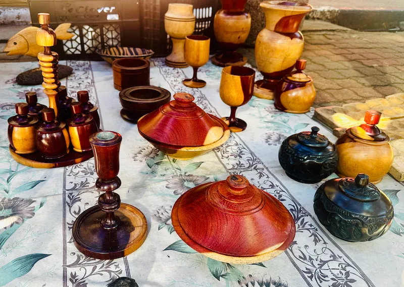

L'artesania de Botswana és un reflex viu de la seva diversitat cultural i la riquesa de les seves tribus. Aquestes peces tradicionals es poden trobar tant en botigues especialitzades de ciutats com Gaborone o Maun, com en els campaments de safari de tot el país, unint tradició i mercat actual.
L'art indígena, especialment les decoracions lekgapho a les cases tradicionals, és un llegat impressionant que passa de generació en generació. Tot i que l'ús del formigó està substituint el fang, aquestes ornamentacions encara es poden admirar en zones rurals com un testimoni de la identitat visual del poble batswana.
La Importància dels Cistells
La cistelleria de Botswana és reconeguda internacionalment com una de les millors d'Àfrica per la seva qualitat i originalitat. Les dones utilitzen la palma mokolwane, que bullen amb tints naturals extrets d'arrels i escorces per obtenir una gamma de vermells, marrons i grocs d'una bellesa excepcional.
"L'art a Botswana i al Sur d'Àfrica, va més enllà de la representació. És una expressió de vida, d'entendre el món." — Mr. Crawford Mandumbwa, professor d'art a WIS Gaborone
Tradicionalment, els cistells tenien usos pràctics com emmagatzemar llavors o transportar aliments. Avui dia, la seva elaboració és un procés lent i minuciós: un sol cistell gran pot trigar fins a dues setmanes a completar-se, esdevenint una font d'ingressos vital per a moltes famílies rurals.
Tècniques Ancestrals
- Teixits i Cistelleria: Ús de la palma i fibres naturals amb dissenys poètics com "Les llàgrimes de la girafa".
- Ceràmica:Elaborada per dones de la comunitat amb argila i òxids naturals per a usos domèstics i rituals.
- Fusta i Os: Talla de fusta de mophane i joieria fina tallada en os, una alternativa sostenible al marfil.
- Artesania San (Bushman): Revitalització de joieria de closca d'ou d'estruç, arcs de caça i instruments musicals tradicionals.

L'artesania no es limita a la utilitat, sinó que s'estén a la navegació i l'art visual. El mokoro, la canoa tradicional excavada en un sol tronc (ara sovint de fibra de vidre per preservar el bosc), segueix sent el mitjà de transport essencial al Delta de l'Okavango i un símbol de l'adaptació al medi.
Finalment, el Museu Nacional de Gaborone i diverses cooperatives artístiques fomenten que tant ciutadans com residents mantinguin viu el patrimoni artístic. Botswana ha sabut transformar les seves habilitats ancestrals en un motor econòmic que manté la cultura viva i en constant evolució.